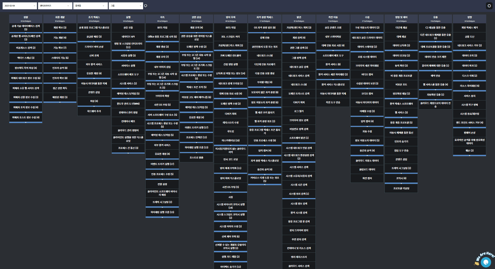

마이터 어택(ATT&CK)
MITRE Adversarial Tactics, Techniques & Common Knowledge Framework
공격 행위를 설명하고 탐지 근거를 표준화하는 공통 언어입니다.
MITRE Adversarial Tactics, Techniques & Common Knowledge Framework
공격 행위를 설명하고 탐지 근거를 표준화하는 공통 언어입니다.

MITRE ATT&CK은 공격자의 전술·기술·절차(TTPs)를 체계화한 공개 지식베이스입니다.
PLURA-AI·XDR은 웹·서버·PC·계정·포렌식 로그를 ATT&CK 전술·기법에 매핑해
공격 흐름을 맥락으로 설명하고 대응 근거를 증거화합니다.
마이터 어택 프레임워크 구성 요소

| 단계 | 수집되는 증거 | ATT&CK 해석 | PLURA 대응 |
|---|---|---|---|
| Web | 요청·응답 본문, URL, 로그인 행위, IP 평판 | Initial Access, Credential Access, Exfiltration | PLURA-WAF 탐지·차단, SIEM 상관 분석 |
| Host | 프로세스 실행, 파일 생성, 레지스트리 변경, 네트워크 연결 | Execution, Persistence, Defense Evasion, C2 | PLURA-EDR 격리·차단, Forensic 증거 수집 |
| Account | 로그인 성공·실패, 원격 접속, 권한 상승, 관리자 행위 | Credential Access, Privilege Escalation, Lateral Movement | 계정 위험도 분석, 접근 차단, SOC 관제 연계 |
| Evidence | 스냅샷 diff, 설정 변경, 의심 아티팩트, 재현 가능한 흔적 | 공격 체인 검증, 침해 범위 확인, 재발 방지 근거 | PLURA-Forensic·VAS 연동, 보고서·증적 관리 |
ATT&CK은 탐지 결과를 보기 좋게 분류하는 용도에 그치지 않습니다. 어떤 로그가 있어야 공격 단계를 설명할 수 있는지, 어떤 조치를 우선해야 하는지 정리하는 운영 기준입니다.
| 비교 항목 | 기존 운영 방식 | PLURA-AI·XDR 운영 방식 |
|---|---|---|
| 탐지 기준 | 개별 장비 경보와 시그니처 중심 분절 | 행위 로그를 ATT&CK 전술·기법으로 연결 맥락화 |
| 로그 범위 | 네트워크·서버·PC·웹 로그가 분리되어 분석 | 웹 본문, 계정 행위, 호스트 이벤트, 포렌식 증거 통합 |
| 제로데이 대응 | 알려진 패턴 중심으로 우회 공격 설명이 어려움 | 비정상 행위와 연쇄 관계를 기반으로 징후 탐지·가상패치 연계 |
| 관제 보고 | 경보 건수 중심 보고로 공격 흐름 설명이 제한적 | ATT&CK 단계, 증거 로그, 조치 이력 중심으로 설명 가능 |
| 개선 활동 | 탐지 후 재발 방지 기준이 모호함 | VAS·감사 정책·하드닝 기준과 연결해 탐지 가능한 환경 개선 |